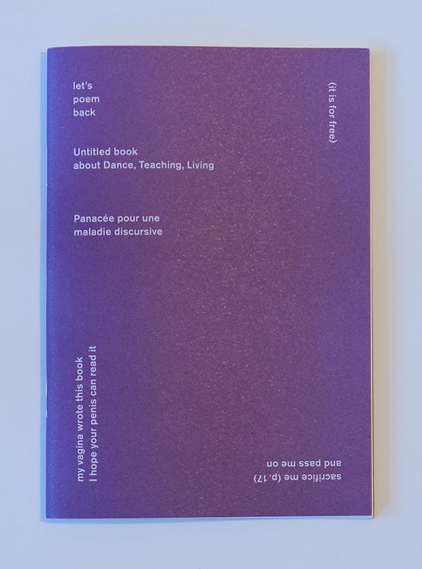

Let's Poem Back 
GHOST Editions, 2013 Let's poem back Hosted by Jennifer Lacey & myself, Teachback in ImPulsTanz Vienna is an experimental space of exchange and undoing for dance artists who teach. A six day gathering, Teachback continues the TTT project initiated by Jennifer Lacey. TTT (teach the teacher, take the tonic) was originally conceived as a place where artists who find themselves teaching could meet and explore the creative context of class and their continuing evolving relationship to the roles of student and teacher within the context of contemporary dance study and creation. In summer 2013, together with Denise Ferreira da Silva, Paula Caspão, Alix Eynaudi, Rasmus Olme, Angela Schubot, Valentina Desideri & Keith Hennessy, we had a studio for 6 days, from 10am to 8pm. Each of us should be present for at least 6 hours a day. Considering our shared resistance at forcing a product from this space of convivial inquiry, we accepted Alix's proposal from the first day to write poems as our primary form of documentation. The collected poems, edited only for order, were harvested on our final day. |